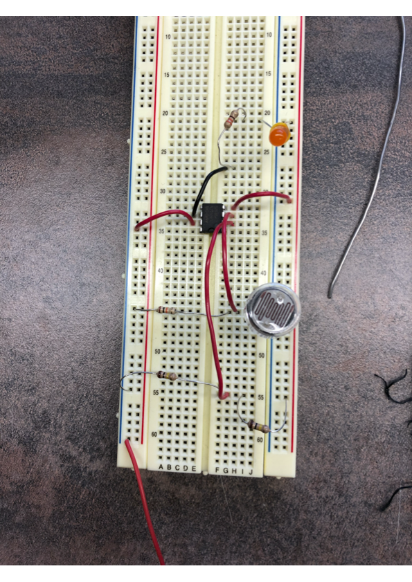
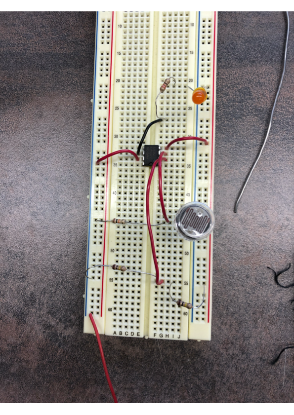

At school
At school I build a sensored-triggered LED circuit. The aim of the circuit was to dispense a scale to measure the weight of your bag in order to prevent people from lifting too heavy bags. I made the circuit on a simulation software then tested it on breadboard. I then printed the cicuit on a PCB and soldererd all the parts. The sensor was working but it unfortunetly didn't work unless the person got very very very close to the box.
 
